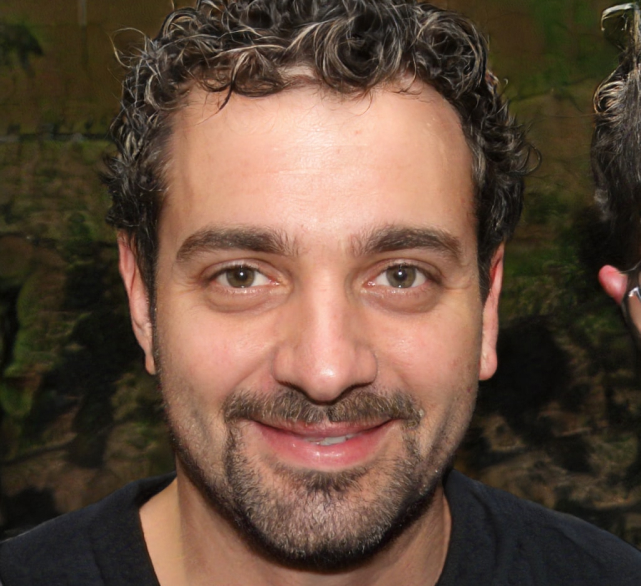

<section class="founder">
  <div class="container">
    <div class="founder__container">
      <div class="founder__info">
        <h2 class="founder__info__title title">Игнатьев Харитон Эдуардович</h2>
        <h4 class="founder__info__subtitle">Основатель фонда</h4>
        <p class="founder__info__desc">
          Что для Вас означает «благотворительность»? Для меня
          благотворительность – это, прежде всего, умение услышать чужую боль.
          Это умение разделить чужую боль. Это системная борьба с системными
          проблемами
        </p>
      </div>
      <div class="founder__img">
        
      </div>
    </div>
  </div>
</section>
